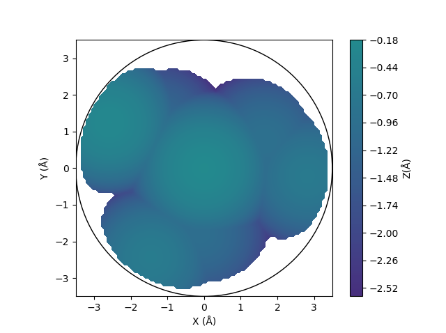

Buried volume#
Buried volumes are implemented as described by Cavallo and co-workers [1].
Module#
The BuriedVolume class calculates the buried volume. Steric maps can also be plotted.
>>> from morfeus import BuriedVolume, read_xyz
>>> elements, coordinates = read_xyz("1.xyz")
>>> bv = BuriedVolume(elements, coordinates, 1, excluded_atoms=[2, 3, 4, 5, 6, 7])
>>> print(bv.fraction_buried_volume)
0.2962110976518822
>>> bv.print_report()
V_bur (%): 29.6
By default, hydrogen atoms are excluded in the calculation. They can be added
by giving the keyword argument indclude_hs=True. The metal atom is also
excluded, while the atoms of other ligands need to be given in the
excluded_atoms list. The default sphere radius is 3.5 Å, but can be changed
with radius=<float>. Default radii type is Bondi which are scaled by a
factor of 1.17. This can be changed with radii_type=<str> and
radii_scale=<float>. Custom radii can be supplied as a list with
radii=<list>.
For more information, use help(BuriedVolume) or see the API:
BuriedVolume
Quadrants and octants#
The buried volume can be decomposed into contributions from quadrants and
octants using the
octant_analysis
method. To get meaningful results, the system should to be oriented in a
reproducible way. Orientation is acheived by specifiying the
z_axis_atoms=<list>``and ``xz_plane_atoms=<list> keyword arguments. For
more information on the orientation convention, see the original reference
[1].
- z-axis orientation
The list of atom indices from
z_axis_atomsis used to define the direction of the z axis. The axis will be oriented from the geometric center of the atoms in the list to the metal atom.- xz-plane orientation
The list of atom indices from
xz_plane_atomsis used to define the orientation of the xz-plane. The coordinate system will be rotateed so that the geometric mean of the given atoms lies in the xz plane.
The results of the octant analysis is stored in the octants attribute,
giving percent buried volume, buried volume (in ų) and the free volume (in ų)
for each octant.
>>> bv = BuriedVolume(elements, coordinates, 1,
... excluded_atoms=[2, 3, 4, 5, 6, 7],
... z_axis_atoms=[14],
... xz_plane_atoms=[11])
>>> bv.octant_analysis()
>>> bv.octants
{'percent_buried_volume': {0: 0.0, ...},
'buried_volume': {0: 0.0, ...},
'free_volume': {0: 22.449297503777064, ...}}
>>> bv.quadrants
{'percent_buried_volume': {1: 27.53214685054044, ...},
'buried_volume': {1: 12.361547111309221, ...},
'free_volume': {1: 32.53704789624491, ...}}
The octants are numbered from 0–7 according to the Gray code and their signs
are given by the
OCTANT_SIGNS dictionary.
The quadrants are numbered from 1–4 corresponding to the Roman numerals I–V and
the corresponding signs are given in the
QUADRANT_SIGNS dictionary.
Distal volume#
The distal volume is the volume of the ligand beyond the sphere. It can
be computed with the
compute_distal_volume
method. Using method="sasa" is faster, while method="buried_volume"
allows octant and quadrant decompositon of the distal volume. This will add
the entries distal_volume and molecular_volume to the results.
>>> bv = BuriedVolume(elements, coordinates, 1,
... excluded_atoms=[2, 3, 4, 5, 6, 7],
... z_axis_atoms=[14],
... xz_plane_atoms=[11])
>>> bv.distal_volume
273.2150492473022
>>> bv.octant_analysis()
>>> bv.compute_distal_volume(method="buried_volume", octants=True)
>>> bv.octants
{'percent_buried_volume': {0: 0.0, ...},
'buried_volume': {0: 0.0, ...},
'free_volume': {0: 22.449297503777064, ...},
'distal_volume': {0: 0.0, ...},
'molecular_volume': {0: 0.0, ...}}
Plotting#
A steric map can be plotted with
plot_steric_map
if the z_axis_atoms=<list> keyword has been given.
>>> from morfeus import BuriedVolume, read_xyz
>>> elements, coordinates = read_xyz("1.xyz")
>>> bv = BuriedVolume(elements, coordinates, 1, excluded_atoms=[2, 3, 4, 5, 6, 7], z_axis_atoms=[2])
>>> bv.plot_steric_map()

Plots can be saved by passing the filename=<str> keyword argument.
draw_3D gives a
three-dimensional representation of the buried volume.
Command line script#
The basic functionality is available through the command line script.
$ morfeus buried_volume 1.xyz - 1 --excluded_atoms='[2,3,4,5,6,7]' - print_report
V_bur (%): 29.6
Background#
The percent of buried volume is a measure of the steric hindrance induced by a ligand of a transition metal complex [1]. A web tool to calculate buried volumes, SambVca, was made available for scientific purposes by Cavallo and co-workers in 2009 [2] with version 2 in 2016 [1]. .
The approach of ᴍᴏʀғᴇᴜs differs somewhat from that in ref. [1] in that points are generated uniformly in the test sphere rather than considering voxels. The numerical results with standard settings are the same though as shown by benchmarks on complexes 1-18 from ref. [1]. Steric maps also match those in ref. [1].
References